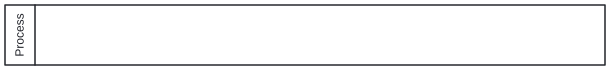
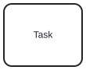
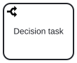
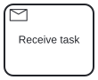
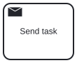
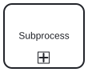
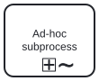
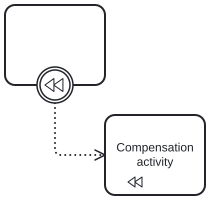

In the following the BPMN element supported by the BPMNOS framework are listed and notes are given where relevant.

- Processes are assumed to have exactly one untyped start event and must be executable (i.e. isExecutable = true).
- Attention
-
Tasks may have standard loop markers as well as parallel and sequential multi-instance markers.
- Abstract tasks

- Tasks without type marker in the upper left corner of the task shape, are called abstract tasks.
- Decision tasks

- Tasks with a branching arrow symbol in the upper left corner of the task shape, are called decision tasks. Decision tasks can be used to indicate that a decision has to be made. Unlike, business rule tasks, script tasks, user tasks or manual tasks, decision tasks do neither prescribe how the task is performed and whether the task is performed by a human or not.
- Note
- The BPMNOS::Model::DecisionTask class is an extension to the BPMN standard. In the XML model they are represented by a <task> element with an attribute bpmnos::type = "Decision".
- Receive tasks

- Tasks with a white envelope symbol in the upper left corner of the task shape, are called receive tasks. Receive tasks are similar to message catch events, however, they may have multi-instance markers and events attached to the boundary of the task.
- Send tasks

- Tasks with a black envelope symbol in the upper left corner of the task shape, are called send tasks. Send tasks are similar to message throw events, however, they may have multi-instance markers and events attached to the boundary of the task. Furthermore, a token at a send task may only proceed when the message is delivered to the recipient.
- Note
- It is assumed that the completion of a send task requires that the message is delivered to the recipient.
- Attention
-

- Subprocesses are assumed to have exactly one untyped start event. They may have standard loop markers as well as parallel and sequential multi-instance markers.
- Attention
-

- Ad-hoc subprocesses must not contain any events or gateways without incoming sequence flow. They may have standard loop markers as well as parallel and sequential multi-instance markers. Furthermore, ad-hoc subprocesses are expected to have a sequential ordering (i.e. ordering = "Sequential"), indicating that activities within the scope of the ad-hoc subprocess must not be executed in parallel. For each ad-hoc subprocess, the model provider iterates through the nodes in the XML tree, starting from the ad-hoc subprocess, and goes up the hierarchy until it finds another ad-hoc subprocess or a scope that contains a tPerformer element with name = "Sequential". If the latter is found, the ad-hoc subprocess is associated to this performer, and all activities of any ad-hoc subprocess associated to this performer must be conducted in sequential order. Otherwise, the sequential ordering only applies to the activities within the ad-hoc subprocess.
- Note
- The BPMN::AdHocSubProcess class is derived from BPMN::Activity and not from BPMN::SubProcess.
Compensation activities

- Compensation activities are activities with the isForCompensation field set to true.
- Note
- It is assumed that no no activtiies are compensated within the scope of a compensation activity.

- Event-subprocesses are assumed to have exactly one typed start event.
- Note
- The BPMN::EventSubProcess class is derived from BPMN::Scope and not from BPMN::SubProcess or BPMN::Activity.
- Supported gateways are exclusive gateways, parallel gateways, inclusive gateways, and event-based gateways. Inclusive gateways are assumed to be diverging.
- Attention
-
- Attention
-
- Intermediate events
- End events
- Attention
-
Only gateways are allowed to have multiple incoming or outgoing sequence flows. Gatekeepers must be provided for diverging exclusive gateways and inclusive gateways.
- Attention
- Implicit gateways, i.e. multiple sequence flows entering or leaving a node that is not a gateway, are not supported.
- Default flows and conditional flows are not supported.
Message flows restrict the flow of messages to the events or (sub)processes the message flow is connected to. All messages sent by a node subject to such a restriction may only be delivered to a node subject to the restriction, and vice versa. A message sent by a node can also be received by another node if no message flow restricts messaging between the nodes.
Data object references can refer to data objects containing information relevant for execution.
- Note
- The visual representation is only a reference to a data object. A model may contain data objects without visual representations, and multiple visual representations may refer to the same data object.
- Attention
-
Data store references can refer to data stores containing information that persists beyond the lifetime of processes.
- Note
- The visual representation is linked to a process, however, the actual data store is not. All information of a data store is globally available.
- Attention
-